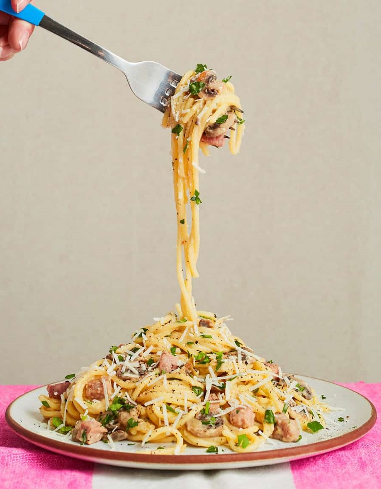

Spaghetti carbonara is an Italian pasta dish which combines spaghetti, eggs, gammon and cheese into an simple, creamy dish.

Ingredients:
- 120g dried spaghetti
- 200g gammon
- 30g Pecorino cheese
- 1 egg
- 1 pack button mushrooms
- ½ brown onion
- 1 vegetable stock cube
- ¼ tsp mustard powder
- Cooking spray
Method:
- Chop the onion, mushrooms and gammon into small pieces.
- Place the spaghetti in a pan of boiling water to cook the pasta.
- Heat a large frying pan with a few sprays of cooking spray. Fry the onions until softened, add the mushrooms & gammon and cook till browned slightly.
- Add 300ml vegetable stock to the frying pan, and cook on high stirring frequently until it reduces by half.
- Whisk the eggs, black pepper and mustard in a separate bowl.
- Drain the spaghetti once it's cooked and tip into a big bowl and add the cooked onions, mushrooms, remaining stock and gammon, stirring well.
- Slowly add the whisked eggs and Pecorino cheese making sure to stir constantly.
- Serve with sprinkled parsley and more Pecorino cheese.